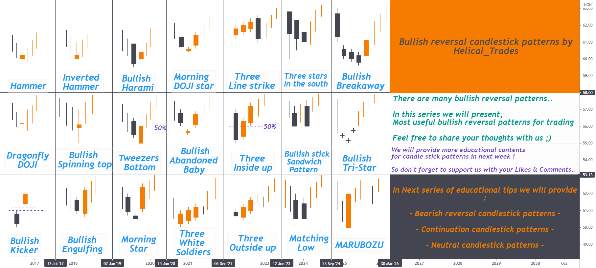
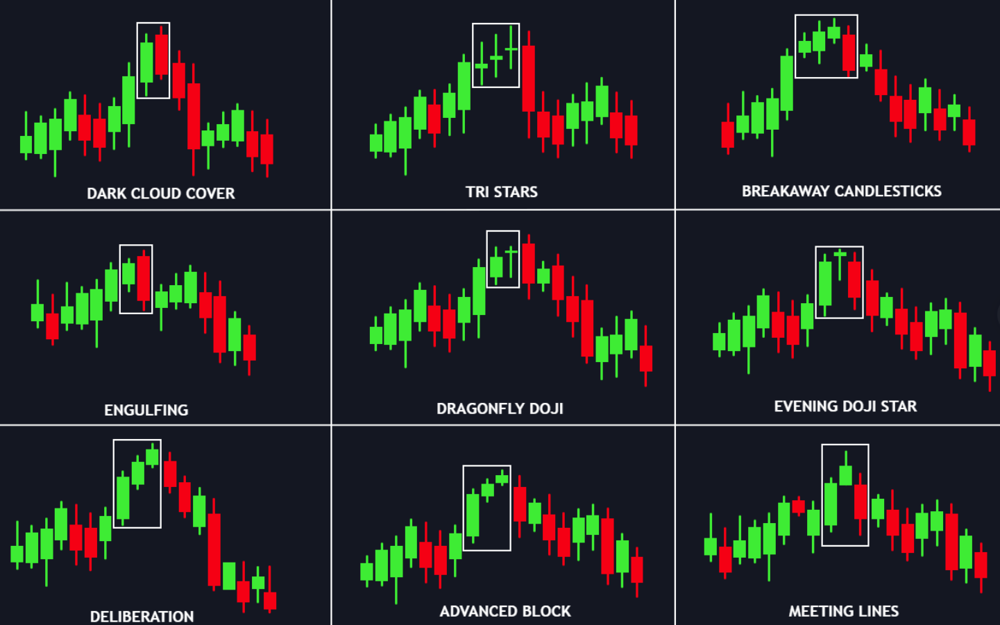

The 4-Candle Reversal Setup
Detect momentum exhaustion and reversals using 4 consecutive candles.
📋 Table of Contents
Pattern Overview




The setup uses 4 consecutive candles to detect when momentum is shifting.
It works because markets often show momentum exhaustion before reversing.
Structure of the Pattern
The pattern consists of four candles:
Candle 1 — Trend Candle
- Strong candle in the current trend direction
- Shows the trend still has momentum
Example: In a downtrend → strong bearish candle.
Candle 2 — Weak Continuation
- Price continues slightly in the same direction
- Momentum starts slowing
This signals trend exhaustion may begin.
Candle 3 — Indecision Candle
- Small body / doji / rejection wick
- Buyers and sellers are fighting
This is the warning sign that momentum is fading.
Candle 4 — Reversal Candle
- Strong candle in the opposite direction
- Closes beyond Candle 3
This confirms the reversal.
Bullish 4-Candle Setup
After a DowntrendStructure:
- 1️⃣ Strong bearish candle
- 2️⃣ Smaller bearish candle (slowing down)
- 3️⃣ Doji / hammer / small candle (indecision)
- 4️⃣ Strong bullish candle (reversal confirmed)
Signal: Momentum shifted from sellers → buyers. Look for long entry.
Bearish 4-Candle Setup
After an UptrendStructure:
- 1️⃣ Strong bullish candle
- 2️⃣ Smaller bullish candle (slowing down)
- 3️⃣ Doji / shooting star / small candle (indecision)
- 4️⃣ Strong bearish candle (reversal confirmed)
Signal: Momentum shifted from buyers → sellers. Look for short entry.
Entry, Stop Loss & Target
For Bullish Setup:
- Entry: After Candle 4 closes bullish
- Stop Loss: Below the low of Candle 3 or Candle 1
- Target: Previous resistance / 1:3 RR
For Bearish Setup:
- Entry: After Candle 4 closes bearish
- Stop Loss: Above the high of Candle 3 or Candle 1
- Target: Previous support / 1:3 RR
Minimum RR must be 1:3. If not → skip the trade.
Best Locations to Trade This Pattern
- At support or resistance
- At order blocks
- At supply/demand zones
- After a liquidity grab
- At key moving averages (50/200 EMA)
❌ Don't trade this pattern in the middle of nowhere. Location matters!
Common Mistakes
- Entering before Candle 4 completes
- Trading without checking location
- Ignoring the overall trend
- Using too large position size
- Not waiting for proper indecision (Candle 3)
Full Checklist
- Price at important location (S/R, OB, demand/supply)
- Candle 1: Strong trend candle
- Candle 2: Weaker continuation
- Candle 3: Indecision (doji, small body, rejection)
- Candle 4: Strong reversal candle
- Stop loss defined
- RR minimum 1:3
- Enter after Candle 4 closes